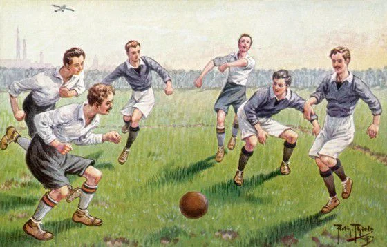
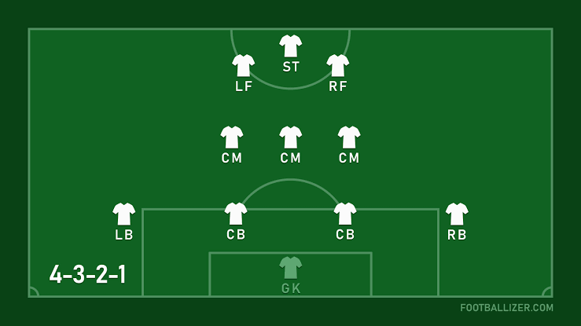

Brief History of Football
Welcome to the Football Website. This website will be talking about the history of football, the rules, the trophies involved, and some of the greatest teams of all time.
First off, what is football? Football is a sport played with 11 players including a goalkeeper. The objective of the game is to shoot the ball into the opposing team's net, and score as much goals in the 90 minute period, and prevent the other teams from scoring goals as best as you can. Football has existed for over 2,000 years with the first recorded football-like kicking game tracing back to ancient China. The formalization of the sport began in 1863 when the English Football Association (FA) wrote the first standardized set of rules. The sport was originally called football, but in the late 1800s, "football" was a broad term for many sports, some of which included rugby and any other game played with your feet that included a ball.
In the 1880s, students at Oxford University came up with a trend of adding "er" to the end of words to shorten them. For example, calling rugby rugger, and breakfast brekker. They shortened association to assoc, eventually adding the er, turing it into assoccer. This was later shortned even more, turning into the word soccer that many use today.


Positions in Football
Just like any other sport, football has many different positions and many different formations. Some popular formations include 4-3-2-1, 4-3-3, and 4-4-2. Right now, these are just a bunch of random numbers, so I will be explaining what they are and how they work.
The term 4-3-2-1 or 4-3-3 represent the amount of players are in each section of the pitch. These sections include defense, midfield, and attack. Usually, there are 3 section, but there is also a fourth section called attacking midfield, which is used in the 4-3-2-1 formation, and any other formation that include 4 numbers. The order of the formations go from defense to attack, and different formations are used depending on the manager that is currently managing the team.
Most formations start with a 4, although some do opt out of this and go with 3 defenders at the back, while having much more midfielders. The 4 defensive positions consist of left back, 2 center backs, and a right back. This defensive position is highly rewarding, because it covers the right wing, left wing, and the striker position. There are 2 center backs, so even if the striker of one of the wingers get past one defender, the second center back can come in and assist with defending the attacking player. The 3 midfield positions are all center midfielders. It consists of 3 players for efficient passing back and forth, and easier passes to either 2 of the attacking midfielders. The midfield is often called the heart of the team, and rightfully so since if you do not have a strong midfield with players that are able to make great passes and have good vision, it will be considerably harder to win games and championships. The 2 attacking midfielders are there to help the singular striker score more goals. Most times, the midfielders are able to pass the ball to the attacking midfielders, and they are then able to pass the ball to the striker for an opportunity to score a goal. The striker is a simple yet complex role, since your only objective is to score goals, but this could be from multiple angles such as curved, straight on, or even with the weaker foot.
